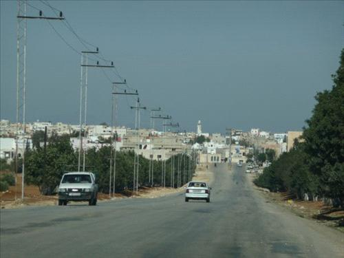

Governorates of Jordan
The Jordanian state is divided into 3 regions, which is the first administrative division in the Kingdom. In turn, these regions are divided into 12 governorates, distributed among these three regions. Each governorate has an administrative governor named a governor, whose primary task is to maintain security in his governorate. Also, these governorates are divided into a district and districts for which regions, cities and villages belong.
The largest governorate in Jordan by area
Ma'an Governorate is the largest of Jordan's governorates by area. Where the Ma'an Governorate covers an area of ??32,832 km2; It thus represents 37% of the total area of ??the Kingdom. Ma'an Governorate is located in the southern side of Jordan; It stretches from the borders of the capital, Amman, to the north, to the Saudi-Jordanian border on the southern side, and from the Wadi Araba border on the western side to the Saudi-Jordanian border on the eastern side.
The smallest governorate in Jordan by area
Jerash Governorate is the smallest of Jordan's governorates. It covers an area of ??410 km2, and Jerash is located 48 km north of the capital, Amman, and it is one of the oldest inhabited governorates, and it is famous as one of the ancient Roman archeological cities; It contains a group of ancient historical monuments, and among the most famous of these monuments is the Roman amphitheater, in which the Jerash Festival of Culture and Arts is held in July every year, and visitors come from all over the world.
Irbid Governorate
The second is classified at the governorate level in terms of population density. Administrative divided into nine brigades. It owns many tourist and archeological sites. It owns many Roman regions, including: Umm Qais, Abela and the Yarmouk River Basin. The governorate has three eligible industrial zones.
Aqaba Governorate
It is located on the Gulf of Aqaba, and is the only sea port for Jordan. There is an airport for domestic and foreign flights. It contributes to the economy of the Kingdom of Jordan because it has many headquarters for major companies and factories. It is one of the most attractive places for tourists who love diving and coastal tourism, as it has some types of coral reefs that you will not find elsewhere, and it also contains a museum under the surface of the water.
Karak Governorate
It owns one of the most important historical monuments: Karak Castle, which was built by the two crosses, and after Salahuddin liberated the region, the Ayyubids were able to control it. The lowest spot in the world is the Dead Sea region. To the south of it is the well of Median mentioned in the Noble Qur’an in Surat Hud.
Tura & Irbid
 Tura is a Jordanian town located in the Irbid governorate in the far north of the country, near the international border with Syria. Tora is the largest residential gathering within the Sahel Horan municipality, and therefore it is considered the main center. In 2017, its population reached 34,948 people, and it is the seventh largest population in the Irbid Governorate. It covers an area of about 28,000 dunams (28 square kilometers). The lands of Tora extend from the east and north along the Syrian border, while the lands of Al-Shajarah and Al-Ramtha border it to the west and south.
The climate in Tura is generally moderate, with a Mediterranean climate. Summer temperatures rise, and they reach their highest levels in the middle of the eighth month of the year, sometimes reaching the mid-thirties, and sometimes around the 40's. The temperature decreases in winter, to reach at zero or less in January, as this causes snowfall for a short period of time and without snow sticking to the ground most of the time.